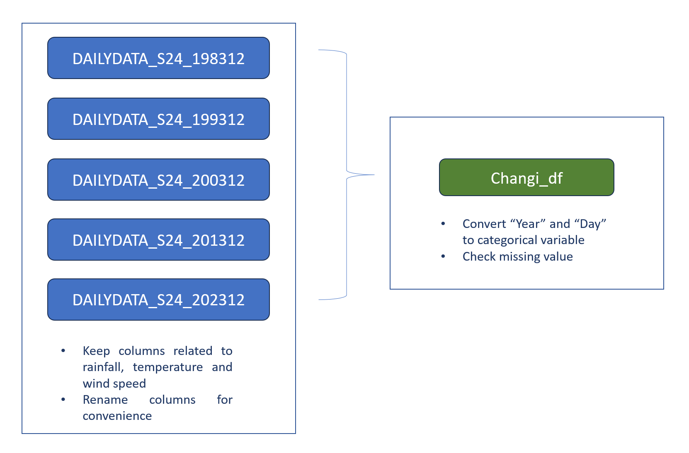
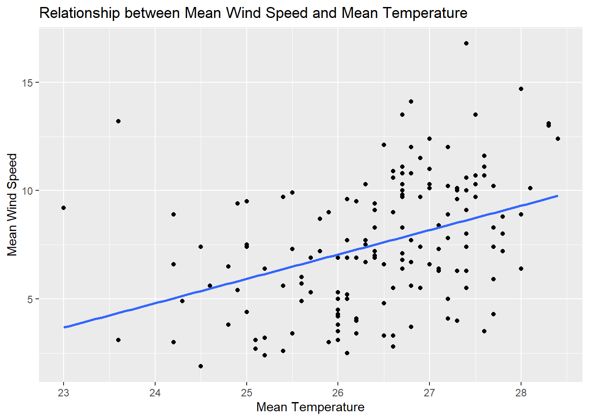
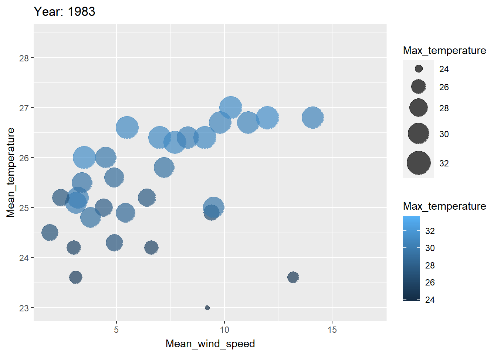

pacman::p_load(ggstatsplot, tidyverse,plotly,dplyr,ggiraph,
patchwork, DT) Take-home_Ex03
1. Overview
The objective of this project is to analyze and visualize the daily temperature records of December from the years 1983, 1993, 2003, 2013, and 2023. By leveraging analytics techniques, the project aims to gain insights into temperature trends over the past four decades and identify any patterns or anomalies. The ultimate goal is to create data-driven interactive visualizations that effectively communicate these insights.
Analyzing long-term temperature trends helps in understanding climate patterns and detecting any changes or anomalies that may have occurred over time.By examining temperature records, it becomes possible to assess the impact of climate change on local or regional climates, as well as its potential implications for ecosystems, agriculture, and human activities.
2. Data Preparation
2.1 Load Packages
The following code chunk loads the packages we need in this take home exercise.
2.2 Data preparation overview

2.3 Import Data
For this take-home exercise, the data is sourced from the Meteorological Service Singapore, specifically from the Changi weather station, for the month of December. Data for the years 1983, 1993, 2003, 2013, and 2023 have been downloaded.
Show the code
changi_1983 <- read_csv("data/DAILYDATA_S24_198312.csv",locale=locale(encoding="latin1"))
changi_1993 <- read_csv("data/DAILYDATA_S24_199312.csv",locale=locale(encoding="latin1"))
changi_2003 <- read_csv("data/DAILYDATA_S24_200312.csv",locale=locale(encoding="latin1"))
changi_2013 <- read_csv("data/DAILYDATA_S24_201312.csv",locale=locale(encoding="latin1"))
changi_1983 <- changi_1983[, c(1, 2, 3, 4, 5, 9, 10, 11, 12, 13)]
colnames(changi_1983) <- c("Station", "Year", "Month", "Day", "Daily_rainfall_total","Mean_temperature", "Max_temperature", "Min_temperature", "Mean_wind_speed", "Max_wind_speed")
changi_1993 <- changi_1993[, c(1, 2, 3, 4, 5, 9, 10, 11, 12, 13)]
colnames(changi_1993) <- c("Station", "Year", "Month", "Day", "Daily_rainfall_total","Mean_temperature", "Max_temperature", "Min_temperature", "Mean_wind_speed", "Max_wind_speed")
changi_2003 <- changi_2003[, c(1, 2, 3, 4, 5, 9, 10, 11, 12, 13)]
colnames(changi_2003) <- c("Station", "Year", "Month", "Day", "Daily_rainfall_total","Mean_temperature", "Max_temperature", "Min_temperature", "Mean_wind_speed", "Max_wind_speed")
changi_2013 <- changi_2013[, c(1, 2, 3, 4, 5, 9, 10, 11, 12, 13)]
colnames(changi_2013) <- c("Station", "Year", "Month", "Day", "Daily_rainfall_total","Mean_temperature", "Max_temperature", "Min_temperature", "Mean_wind_speed", "Max_wind_speed")
changi_2023 <- read_csv("data/DAILYDATA_S24_202312.csv")
changi_2023 <- changi_2023[, c(1, 2, 3, 4, 5, 9, 10, 11, 12, 13)]
colnames(changi_2023) <- c("Station", "Year", "Month", "Day", "Daily_rainfall_total","Mean_temperature", "Max_temperature", "Min_temperature", "Mean_wind_speed", "Max_wind_speed")2.4 Combine data
The following code chunk combined the processed dataframes together.
Show the code
library(dplyr)
# Combine the data frames
combined_df <- bind_rows(changi_1983, changi_1993, changi_2003, changi_2013, changi_2023)
combined_df$Year <- factor(combined_df$Year)
combined_df$Day <- factor(combined_df$Day)
datatable(head(combined_df,n=5))2.5 Check missing value
The combined_df is a small dataframe. the following code can be used to check whether there is missing data.
Show the code
# Check for missing values in combined_df
missing_data <- colSums(is.na(combined_df))
# Print the number of missing values in each column
datatable(data.frame(missing_data))After comfirming there is no missing data, combined_df can be used for further analysis.
3. Temperature Data Analysis
3.1 Mean Temperature Analysis
In this column range chart, each column represents a day in December for each Year, and the height of the column represents the range between the minimum and maximum temperatures for that day. The color of the column is determined by the mean temperature for that day.
Show the code
library(highcharter)
# Create a new column for the combined date-like string
combined_df$Date <- paste0(combined_df$Year, "-December-", combined_df$Day)
# Create the tooltip
tltip <- tooltip_table(
c("Year", "Day", "Min", "Mean", "Max"),
c("{point.Year}", "{point.Day}", "{point.Min_temperature}°", "{point.Mean_temperature}°", "{point.Max_temperature}°")
)
# Create the highchart
hchart(
combined_df,
type = "columnrange",
hcaes(
x = Date,
low = Min_temperature,
high = Max_temperature,
color = Mean_temperature
)
) |>
hc_chart(
polar = TRUE
) |>
hc_yAxis(
max = max(combined_df$Max_temperature) + 5, # Adjust max and min values as needed
min = min(combined_df$Min_temperature) - 5,
labels = list(format = "{value} C"),
showFirstLabel = FALSE
) |>
hc_xAxis(
title = list(text = ""),
gridLineWidth = 0.5,
labels = list(format = "{value}")
) |>
hc_tooltip(
useHTML = TRUE,
pointFormat = tltip,
headerFormat = as.character(tags$small("{point.Date}"))
) |>
hc_title(
text = "Climatical characteristics"
) |>
hc_size(
height = 600
)The chart shows variability in temperature patterns across the different years in December. Year-to-year comparisons reveal differences in mean and range of temperatures, there is a trends of increase in mean temperature over time.
Year 1983:
More purple color indicates lower mean temperatures compared to other years.
The distribution of colors and heights of bars suggest a generally cooler December compared to the other years.
Years 1993, 2003 and 2013:
Similar distribution of colors and heights of bars suggest similar temperature patterns in these years.
The colors and heights suggest a moderate temperature range for December.
Year 2023:
More yellow color indicates higher mean temperatures compared to other years.
Taller bars suggest higher temperature ranges, indicating a relatively warmer December compared to other years.
We can further confirm the temperature change using a heat map.
Show the code
# Assuming combined_df is your combined data frame containing Year, Day, and Mean_temperature columns
# Create the heatmap using highcharter
colors <- c("#FFFFFF", "#FFA500", "purple") # white to orange to red
# Create the heatmap using highcharter with customized colors
hchart(combined_df, "heatmap", hcaes(x = Year, y = Day, value = Mean_temperature)) %>%
hc_colorAxis(stops = color_stops(n = length(colors), colors = colors))Moreover, we can utilize a line chart to more effectively visualize the trend of the mean temperature.
Show the code
hchart(combined_df, "line", hcaes(x = Day, y = Mean_temperature, group = Year))3.2 Validating Daily Temperature Increase
In order to validate the value of daily mean temperature increase, we need a new data frame to store the calculated daily mean temperature.
Show the code
avg_temp <- aggregate(Mean_temperature ~ Year, data = combined_df, FUN = function(x) round(mean(x), 2))
# Rename the Mean_temperature column to Avg_Temp
names(avg_temp)[2] <- "Avg_Temp"
# Print the new dataframe
datatable(avg_temp)Show the code
hchart(avg_temp, "line", hcaes(x = Year, y = Avg_Temp)) %>%
hc_title(text = "Daily Average Temperature by Year") %>%
hc_yAxis(title = list(text = "Temperature")) %>%
hc_xAxis(title = list(text = "Year"))From the data table and interactive line chart above, we can calculate that the increase in daily mean temperature from 1983 to 2023 is 1.89 which is within the range given(Daily mean temperature are projected to increase by 1.4 to 4.6)
3.3 Max and Min Temperature Analysis
Show the code
p <- ggplot(data = combined_df, aes(x = as.factor(Year), y = Mean_temperature)) +
geom_boxplot(aes(y = Max_temperature, fill = "Max Temperature"), alpha = 0.7) +
geom_boxplot(aes(y = Min_temperature, fill = "Min Temperature"), alpha = 0.7) +
labs(title = "Temperature Distribution by Year",
x = "Year",
y = "Temperature",
fill = "Variable") +
scale_fill_manual(values = c( "Max Temperature" = "indianred", "Min Temperature" = "lightskyblue2")) +
theme_minimal()
# Make the plot interactive
p <- ggplotly(p, tooltip = c("Year", "Max_temperature", "Min_temperature"))
# Print the plot
print(p)From the interactive box plot shown above, we can note a general increasing trend in minimum temperatures. The increases in 1993 and 2023 compared to the previous decade are particularly noteworthy. Additionally, regarding the spread of the box plot, 2013 exhibits the widest temperature range, while 2023 has the smallest.
3.4 Temperature and Wind Speed Analysis
Given that wind speed is included in the dataset, it would be intriguing to investigate the possible relationship between mean temperature and mean wind speed. To begin, we can employ a simple scatter plot with a trendline to visualize the distribution of mean temperature and mean wind speed.
Show the code
# Scatter plot with trend line
ggplot(combined_df, aes(x = Mean_temperature, y = Mean_wind_speed)) +
geom_point() + # Add points for scatter plot
geom_smooth(method = "lm", se = FALSE) + # Add linear trend line
labs(x = "Mean Temperature", y = "Mean Wind Speed", title = "Relationship between Mean Wind Speed and Mean Temperature")
Based on the plot above, we can see a positive correlation between mean temperature and mean wind speed. However, the scattered distribution of the points suggests that the correlation is not particularly strong.
Show the code
plot_ly(data = combined_df,
x = ~Mean_temperature,
y = ~Mean_wind_speed,
color = ~Year)By creating an interactive scatter plot of mean temperature and mean wind speed, with the points colored by year, we can observe that in 2023, both mean temperature and mean wind speed are higher(upper right corner) compared to other years, while in 1983, they are the lowest(lower left corner).
To visualize the change over these 50 years more effectively, we can use an animation to demonstrate the process.
Show the code
library(ggplot2)
library(gganimate)
library(dplyr)
# Create animated bubble plot
ggplot(combined_df, aes(x = Mean_wind_speed, y = Mean_temperature, size = Max_temperature, color =Max_temperature )) +
geom_point(alpha = 0.7) +
scale_size(range = c(2, 12)) +
labs(title = 'Year: {closest_state}', x = 'Mean_wind_speed', y = 'Mean_temperature') +
transition_states(Year) +
ease_aes('linear')